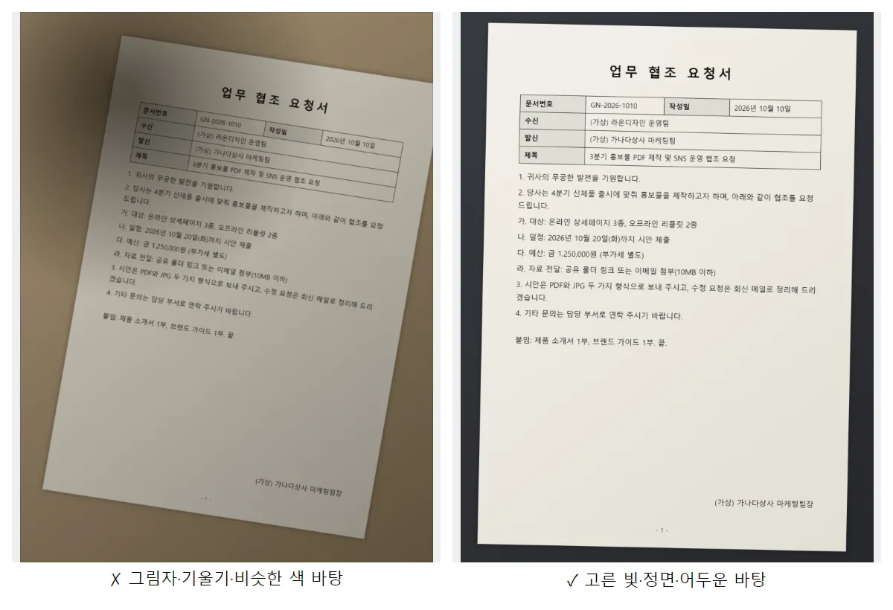
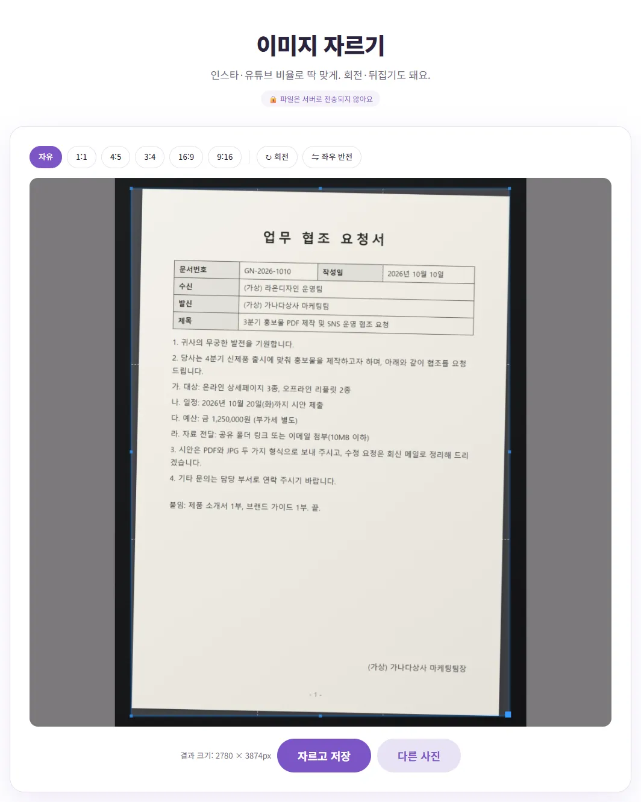
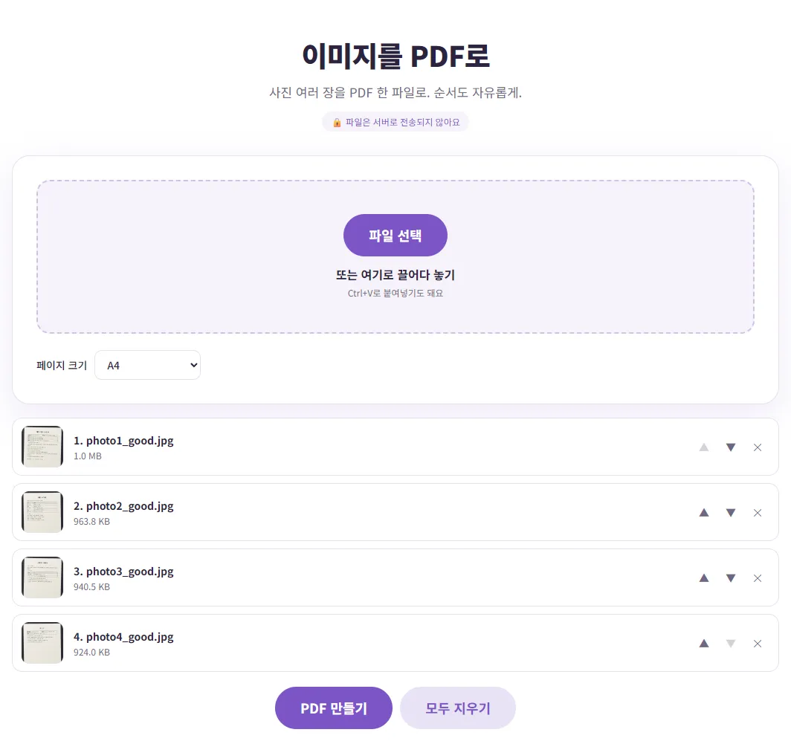

휴대폰으로 찍은 서류 사진, 어떻게 PDF로 만들까요?
스캐너는 없는데 '서류를 PDF로 보내 주세요'라는 말을 들으면 막막하죠? 휴대폰으로 잘 찍고, 필요한 부분만 남기고, A4 PDF 한 파일로 묶는 순서를 직접 해 본 숫자와 함께 알려 드릴게요.
먼저, 찍는 단계에서 결과가 거의 정해져요
사진을 그냥 여러 장 보내지 않고 PDF로 묶는 이유는 간단해요. 한 파일이라 받는 사람이 하나씩 내려받지 않아도 되고, 쪽 순서가 고정되고, 컴퓨터·휴대폰 어디서나 같은 모양으로 열려요. 그래서 관공서·회사·학교에서 'PDF로 보내 달라'는 요청이 많아요.
사진으로 만든 PDF가 지저분해 보이는 이유는 대부분 PDF로 바꾸는 과정이 아니라 찍는 순간에 생겨요. 나중에 보정으로 되돌리기 어려운 것들이라, 아래 네 가지만 지켜도 받는 사람이 읽기 훨씬 편해져요.
- 그림자 피하기: 천장 조명 바로 아래에서 휴대폰을 들고 위에서 찍으면 휴대폰과 손 그림자가 종이에 그대로 떨어져요. 낮에 창가처럼 빛이 옆에서 고르게 들어오는 곳으로 옮기거나, 몸을 조명과 비스듬한 위치에 두세요.
- 정면에서 찍기: 종이를 바닥이나 책상에 평평하게 놓고, 휴대폰을 종이와 나란하게 들어 바로 위에서 찍어요. 비스듬히 찍으면 위쪽이 좁아지는 사다리꼴이 되고, 이건 단순한 자르기나 회전으로는 반듯하게 펴지지 않아요.
- 밝은 곳에서, 종이와 다른 색 바탕 위에: 어두우면 휴대폰이 감도를 올리면서 사진에 자글자글한 잡티가 생겨요. 바탕은 흰 종이와 색이 다른 어두운 책상이나 천이 좋아요. 종이 테두리가 또렷해야 나중에 자를 때도 경계가 잘 보여요.
- 글자에 초점 맞추기: 화면에서 글자 부분을 한 번 눌러 초점을 맞춘 뒤 찍고, 찍은 사진을 손가락으로 확대해서 작은 글씨까지 읽히는지 확인하세요.

휴대폰에 스캔 기능이 있다면 그것도 좋은 선택이에요
요즘 휴대폰 앱에는 문서 테두리를 찾아 반듯하게 펴 주는 스캔 기능이 들어 있어요. 비스듬히 찍힌 걸 바로잡는 기능은 이런 전용 스캔 기능이 더 잘해요. 공식 지원 문서에서 확인한 경로는 이래요.
| 앱 | 공식 안내에 나온 경로 |
|---|---|
| 아이폰 메모 | 메모를 열고 첨부 버튼 → '문서 스캔' → 셔터(또는 음량 버튼). 모서리를 드래그해 페이지에 맞추고 '스캔 항목 유지' |
| 아이폰 파일 | 더 보기 버튼 → '문서 스캔' → 촬영 후 저장할 위치를 고르고 '저장' |
| 구글 드라이브 (안드로이드) | 오른쪽 아래 카메라 → 촬영 → 자르기·회전 등 편집 → 완료 → 파일 이름 입력, .pdf 또는 .jpg 선택 → 저장 |
애플 안내에 따르면 자동 모드에서는 문서가 화면에 들어오면 알아서 찍히기도 해요. 버튼 모양이나 이름은 앱 버전에 따라 조금씩 다를 수 있으니 화면에서 비슷한 메뉴를 찾아 보세요. 이미 사진첩에 찍어 둔 서류 사진이 있거나, 여러 사람에게 받은 사진을 PC에서 한 파일로 묶어야 할 때는 아래 방법이 편해요.
필요한 부분만 남기기: 이미지 자르기
종이 바깥의 책상, 손가락, 다른 서류가 같이 찍혔다면 PDF로 묶기 전에 잘라 두세요. 이미지 자르기에서 사진을 올리고 네모 틀의 모서리를 종이 테두리에 맞춘 뒤 '자르고 저장'을 누르면 돼요. 비율은 '자유'로 두면 종이 모양 그대로 자를 수 있어요.

다만 이 도구는 네모로 자르고 90도씩 돌리는 것까지만 해요. 1~2도 살짝 기운 것을 바로 세우거나, 비스듬히 찍혀 사다리꼴이 된 종이를 펴 주지는 못해요. 기울기가 눈에 띄면 다시 찍는 게 가장 빠르고, 자주 그렇다면 위의 휴대폰 스캔 기능을 쓰는 걸 권해요.
사진 여러 장을 PDF 한 파일로 묶기
- 이미지 PDF 변환을 열고 '페이지 크기'를 먼저 고르세요. 서류라면 'A4'를 추천해요(이유는 아래 표).
- 사진을 한꺼번에 올리세요. 아이폰 HEIC 사진이 안 들어가면 HEIC를 JPG로 바꾸는 법을 참고하세요.
- ▲▼ 버튼으로 쪽 순서를 맞추세요. 올린 순서가 곧 PDF의 쪽 순서예요.
- 'PDF 만들기'를 누르면 바로 저장돼요.

직접 해 보니 4032×3024 크기 사진 4장(합계 약 3.8MB)이 1초도 안 돼 PDF 한 파일이 됐고, 결과는 1.2MB(1,279,773바이트)였어요. 같은 방식으로 12장을 묶었을 때는 약 2.6초, 3.7MB였어요. 원본보다 작아진 건 이 도구가 긴 변이 2500픽셀보다 큰 사진을 2500픽셀로 줄여서 넣기 때문이에요. 서류를 화면으로 읽거나 A4로 출력하기에는 충분한 크기예요.
신분증·영수증처럼 작은 서류는?
앞뒷면이 있는 서류는 앞면과 뒷면을 따로 찍어 순서대로 올리면 한 PDF 안에 두 쪽으로 들어가요. 다만 A4를 고르면 사진이 쪽에 꽉 차게 확대되기 때문에, 신분증 사진을 넣으면 A4 한 장 가득 크게 들어가요. 실제 크기의 복사본처럼 작게 넣는 기능은 없으니, 제출처가 '실물 크기 사본'을 요구한다면 복사기나 스캐너를 쓰는 게 맞아요. 개인정보가 많은 서류라면 필요 없는 부분을 먼저 자르거나 가리고 보내는 것도 잊지 마세요.
A4와 '사진 크기에 맞춤', 뭐가 다를까요?
| 설정 | 쪽 크기 | 어울리는 경우 |
|---|---|---|
| A4 | 모든 쪽이 A4. 사진은 가운데에, 둘레에 약 8mm 흰 여백 | 제출 서류, 출력할 문서, 쪽 크기가 들쑥날쑥하면 안 될 때 |
| 사진 크기에 맞춤 | 사진 픽셀 수를 그대로 쪽 크기로 사용 | 사진첩·작품처럼 화면으로만 볼 때 |
'사진 크기에 맞춤'으로 휴대폰 사진을 넣었더니 한 쪽이 약 80×107cm로 잡혔어요. 화면으로 볼 때는 문제가 없지만, 받는 쪽에서 '실제 크기'로 출력하거나 쪽 크기를 따지는 시스템에 올리면 어색할 수 있어요. 서류라면 A4가 무난해요.
용량이 크면 한 번 더 줄이기
사진이 많으면 PDF도 금방 몇 MB가 돼요. 업로드 칸이 '5MB 이하'처럼 정해져 있다면 만든 PDF를 PDF 용량 줄이기에 넣어 보세요. 위의 12장짜리 3.7MB PDF를 '보통'으로 줄였더니 542.9KB가 됐어요. 압축하면 각 쪽이 조금 더 거친 그림으로 다시 저장되니, 작은 글씨가 읽히는지 꼭 열어서 확인하세요. 강도별 차이와 메일 첨부 한도는 PDF 용량이 커서 메일이 안 보내질 때에 자세히 정리해 두었어요.
모든 과정은 내 브라우저 안에서 처리돼서 서류 사진이 서버로 올라가지 않아요. 계약서처럼 이름과 주소가 적힌 서류도 부담 없이 쓸 수 있어요.
보내기 전에 확인할 것
- 쪽 순서: PDF를 열어 1쪽부터 끝까지 넘겨 보세요. 순서가 틀렸다면 다시 만들거나 PDF 쪽 순서 바꾸기·삭제를 참고하세요.
- 읽히는지: 화면에서 100%로 봤을 때 숫자·이름이 또렷한지 보세요. 흐리면 압축 강도를 낮추거나 다시 찍는 게 나아요.
- 파일 이름: 받는 사람이 알아보기 쉽게 '이름_서류명.pdf'처럼 바꿔 두면 좋아요.
- 원본 사진 보관: 다시 만들 일이 생길 수 있으니 원본 사진은 지우지 마세요.